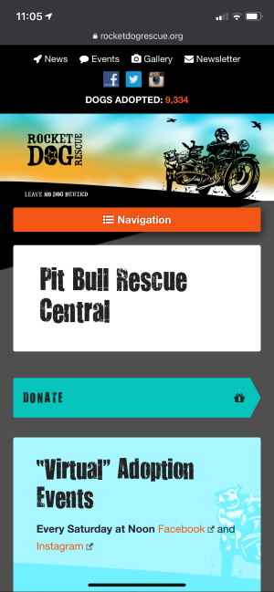
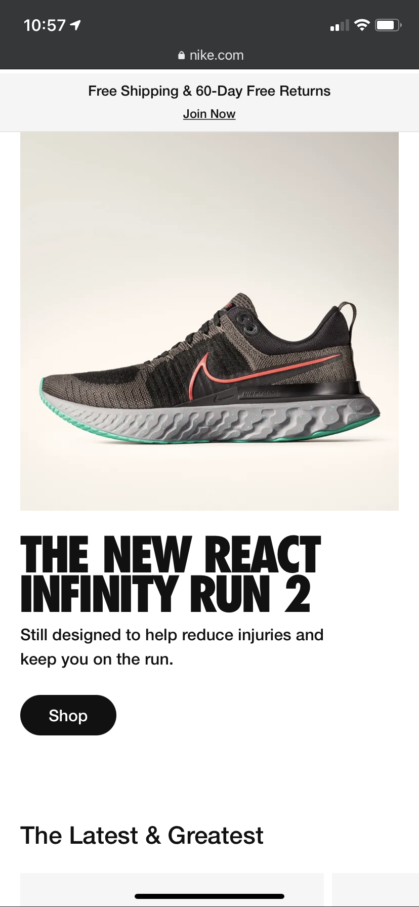
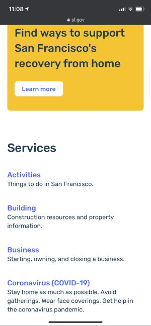

Contrast
Rocket Dog Rescue
rocketdogrescue.org
Rocket Dog Rescue's website is a great example of contrast. The bright colors jump out at the viewer in sharp contrast to the grey background. The black text is clearly visible against the lighter backgrounds, and the bright orange nav bar has white text.
Alignment
Nike
Nike.com
Nike.com exemplifies alignment wonderfully with its crisp left-aligned text. While many designers choose to center everything, Nike creates a hard edge along the left-hand side. This makes it easy for the eye to follow and gives the page strength.
Proximity
San Francisco
sf.gov
San Francisco (which is both a city and a county) has perfect use of proximity of its official website. Placing related lines of text close to one another and distancing them slightly from other sections makes it easy for the reader to figure out which lines go with which. This makes the page easy to understand and navigate.